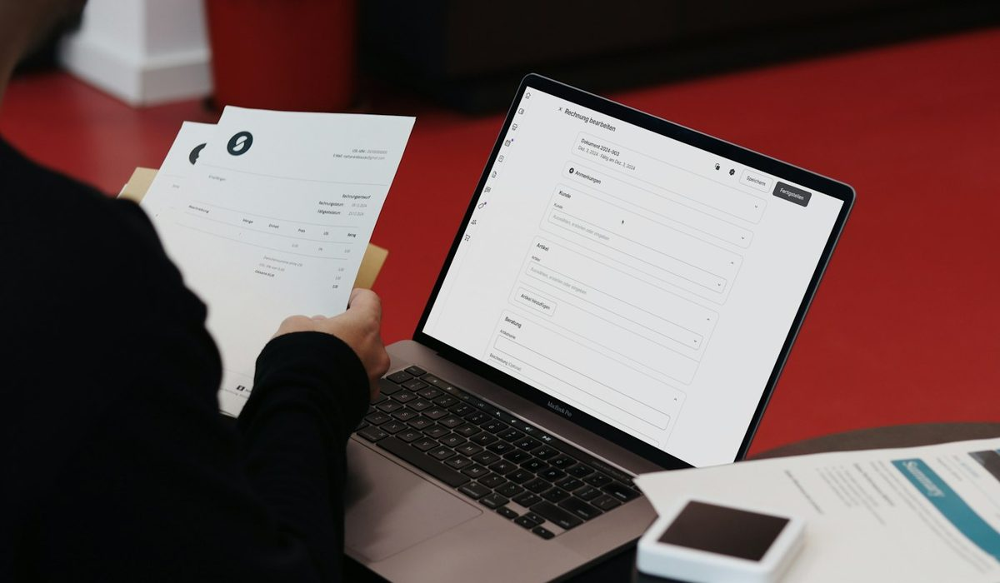

En bref
Non, un compte bancaire professionnel n'est pas obligatoire pour un micro-entrepreneur. La loi impose un compte dédié à l'activité seulement quand le chiffre d'affaires dépasse 10 000 € pendant deux années civiles consécutives. Ce compte dédié peut être un simple compte de particulier, réservé à l'activité, avec la mention EI.
- Le seuil est de 10 000 € de chiffre d'affaires annuel, il était de 5 000 € avant la loi PACTE
- Il faut dépasser ce seuil deux années civiles de suite, une seule année ne suffit pas
- Le compte dédié peut être un second compte de particulier, il n'a pas à porter l'étiquette « pro »
- Une SASU ou une EURL, qui sont des sociétés, relèvent d'une autre logique et ouvrent un compte au nom de la société
Sommaire de ce guide
Ce que dit vraiment la loi
La règle tient en une phrase. Un micro-entrepreneur doit consacrer un compte bancaire à son activité dès que son chiffre d'affaires dépasse 10 000 € pendant deux années civiles consécutives. Avant ce seuil, aucune obligation.
Ce seuil date de la loi PACTE. Il était de 5 000 € auparavant, ce qui obligeait presque tous les indépendants à ouvrir un second compte dès la deuxième année. Le relèvement a libéré les activités d'appoint, les cours particuliers du soir, la vente de créations le week-end, les petites prestations ponctuelles.
Le mot qui compte est « dédié ». La loi ne parle pas de compte professionnel. Elle demande que les recettes et les dépenses de l'activité passent par un compte qui ne sert qu'à elle, pour que l'administration et l'Urssaf puissent lire l'activité sans démêler les courses du samedi et les factures clients.

Le tableau des huit situations
Le seuil de deux années trompe souvent. Un bon exercice ne déclenche rien tout seul, il faut que l'année suivante dépasse elle aussi 10 000 €. Le tableau reprend huit parcours fréquents.
| Situation | Montant | Années au-dessus de 10 000 € | Compte dédié obligatoire | Compte « pro » exigé par la loi | Notre conseil |
|---|---|---|---|---|---|
| Lancement, première année incomplète | 4 000 € | 0 | Non | Non | Un second compte de particulier suffit |
| Activité d'appoint stable | 9 500 € par an | 0 | Non | Non | Séparer quand même les flux |
| Un pic puis un retour sous le seuil | 12 000 € puis 8 000 € | 1 | Non | Non | Surveiller l'année suivante |
| Sous le seuil puis au-dessus | 8 000 € puis 11 000 € | 1 | Pas encore | Non | Ouvrir le compte dédié sans attendre |
| Deux années au-dessus | 11 000 € puis 14 000 € | 2 | Oui | Non | Compte dédié avec la mention EI |
| Activité installée | 30 000 € par an | 2 et plus | Oui | Non | Comparer compte de particulier et compte pro |
| Encaissement d'espèces et de chèques | 20 000 € par an | 2 | Oui | Non | Vérifier les frais de dépôt avant de choisir |
| Passage en société (SASU ou EURL) | Selon le capital | Sans objet | Oui, au nom de la société | Oui | Compte au nom de la société |
Huit situations types construites à partir de la règle publiée sur service-public.fr et economie.gouv.fr. Notes et tarifs, relevé de démonstration de la rédaction, octobre 2026.
Le calcul se fait sur le chiffre d'affaires encaissé, celui que vous déclarez à l'Urssaf, et non sur le bénéfice. Un formateur qui facture 11 000 € dans l'année et dépense 4 000 € en matériel a bien dépassé le seuil, même si son revenu réel tourne autour de 7 000 €. C'est l'erreur la plus fréquente chez les micro-entrepreneurs qui pensent rester sous la barre.
Deux lignes méritent un arrêt. Celle du pic isolé d'abord, 12 000 € une année puis 8 000 € la suivante. Le compteur repart de zéro, aucune obligation ne naît. Celle du passage en société ensuite. Une SASU ou une EURL n'est plus une micro-entreprise, c'est une personne morale distincte de son dirigeant, et l'argent de la société circule sur un compte ouvert à son nom.
Compte dédié ou compte pro, la vraie différence
Un compte dédié est un usage. Un compte professionnel est un produit commercial. La loi n'exige que le premier.
Concrètement, un micro-entrepreneur qui dépasse le seuil peut ouvrir un second compte de particulier, à son nom suivi de la mention EI, et y faire passer toute son activité. C'est légal et c'est souvent moins cher. Une limite pourtant. Certaines conventions de compte de particulier interdisent un usage professionnel, et la banque peut alors refuser les virements de clients ou reclasser le compte. Relisez la vôtre avant de vous lancer.
| Point de comparaison | Compte de particulier dédié | Compte professionnel |
|---|---|---|
| Accepté par la loi pour un micro-entrepreneur | Oui | Oui |
| Prix d'entrée | Souvent gratuit en banque en ligne, sous condition d'usage | De 0 € à plus de 20 € par mois |
| Usage pro autorisé par la convention | Pas toujours | Oui |
| Facturation et rapprochement comptable | Rarement | Souvent inclus |
| Terminal de paiement | Non | Selon l'offre |
| Mention EI sur le compte | À demander | Prévue |
Fourchettes relevées sur les grilles tarifaires des offres pour indépendants. Notes et tarifs, relevé de démonstration de la rédaction, octobre 2026.
Le compte dédié a un autre avantage, moins visible. En cas de contrôle, il sert de pièce justificative à lui seul. Chaque encaissement correspond à une facture, chaque dépense à une activité. Sur un compte mélangé, il faut au contraire justifier ligne par ligne que le virement d'un proche n'est pas une recette non déclarée. Personne n'a envie de refaire ce travail trois ans plus tard.
Notre avis est tranché. Sous 10 000 € de chiffre d'affaires, un compte pro payant n'a d'intérêt que s'il fait gagner du temps sur la facturation ou la déclaration Urssaf. Au-delà, le choix se fait sur les services, pas sur la loi.
Les cas où un compte pro devient le bon choix
La loi ne l'impose pas, mais l'activité peut le réclamer. Trois signaux reviennent souvent.
- Vous encaissez des espèces ou des chèques chaque semaine, et le coût du dépôt finit par peser plus lourd que l'abonnement.
- Vous voulez un terminal de paiement pour vos clients, ce qu'aucun compte de particulier ne propose.
- Vous passez plus d'une heure par mois à rapprocher vos factures et vos encaissements à la main.
Le bon compte pour un micro-entrepreneur n'est pas celui que la loi exige. C'est celui qui coûte moins cher que le temps qu'il fait gagner.
À l'inverse, un graphiste payé par virement, trois clients réguliers, aucune espèce, se contente très bien d'un compte de particulier dédié. Il paiera une plaquette tarifaire plus légère et gardera sa liberté.
Que faire selon votre situation
Vous démarrez et restez sous 10 000 €
Aucune obligation. Ouvrez tout de même un second compte gratuit en banque en ligne et faites-y passer l'activité. Le jour où le seuil tombera, vous serez déjà en règle, sans changer de RIB auprès de vos clients.
Vous avez dépassé 10 000 € une première fois
Le compteur tourne. Si l'année en cours dépasse aussi le seuil, l'obligation s'appliquera. Ouvrez le compte dédié maintenant plutôt que dans l'urgence.
Vous dépassez le seuil depuis deux ans
Le compte dédié est obligatoire. Vérifiez que votre compte actuel ne sert qu'à l'activité, qu'il porte la mention EI et que sa convention autorise un usage professionnel.
Vous encaissez beaucoup d'espèces
Comparez les frais de dépôt avant le prix de l'abonnement. Sur 1 000 € déposés chaque mois, une différence d'un point de pourcentage représente 120 € par an.
Vous passez en SASU ou en EURL
Vous quittez la micro-entreprise. La société ouvre un compte à son nom, qui reçoit aussi le dépôt du capital, et vos comptes personnels restent séparés.
Notre verdict
Un compte pro n'est jamais obligatoire pour un micro-entrepreneur. Un compte dédié le devient au-delà de 10 000 € de chiffre d'affaires sur deux années civiles consécutives, et il peut s'agir d'un compte de particulier réservé à l'activité, avec la mention EI.
Si vous êtes sous le seuil, ouvrez quand même un compte gratuit séparé, par confort. Si vous l'avez franchi deux ans de suite, mettez-vous en règle sans attendre. Si vous encaissez des espèces ou voulez un terminal, prenez un compte pro et comparez d'abord les frais de dépôt.
Questions fréquentes
Quel est le seuil de chiffre d'affaires qui rend le compte dédié obligatoire ?
Le seuil est de 10 000 € de chiffre d'affaires annuel, dépassé pendant deux années civiles consécutives. Il a été relevé par la loi PACTE, il était de 5 000 € auparavant. Une seule année au-dessus ne suffit pas à déclencher l'obligation.
Un compte de particulier peut-il servir de compte dédié ?
Oui. Service-public.fr précise que le compte dédié n'a pas à être un compte professionnel. Un second compte de particulier, réservé à l'activité et portant la mention EI, remplit l'obligation, à condition que sa convention accepte un usage professionnel.
Peut-on utiliser son compte courant personnel pour sa micro-entreprise ?
Oui, tant que le chiffre d'affaires reste sous 10 000 € deux années de suite. Au-delà, il faut un compte qui ne sert qu'à l'activité. Mélanger courses et factures sur un même compte complique de toute façon la lecture des recettes.
Une SASU ou une EURL doit-elle ouvrir un compte professionnel ?
Oui, en pratique. Une SASU ou une EURL est une société distincte de son dirigeant, elle a besoin d'un compte à son nom pour recevoir le dépôt du capital et faire circuler son argent. La règle des 10 000 € ne concerne que les micro-entrepreneurs.
Combien coûte un compte dédié pour un micro-entrepreneur ?
De 0 € à plus de 20 € par mois. Un second compte de particulier en banque en ligne est souvent gratuit sous condition d'usage, les comptes professionnels vont de l'offre gratuite à plusieurs dizaines d'euros par mois selon les services. Les frais de dépôt d'espèces et de chèques pèsent souvent plus que l'abonnement.
Que signifie la mention EI sur le compte ?
EI signifie entrepreneur individuel. Depuis la réforme du statut, le micro-entrepreneur exerce sous la forme d'une EI, et cette mention accompagne son nom sur les documents liés à l'activité, dont l'intitulé du compte dédié.
Notre méthode
Ce comparatif repose sur des données publiques, vérifiables une par une, et sur des critères affichés avant le classement.
- Les tarifs sont relevés dans les plaquettes tarifaires et les pages officielles des établissements, frais de tenue de compte et de carte compris
- Les conditions d'ouverture (revenus, âge, justificatifs, délai) sont vérifiées sur le parcours d'ouverture de chaque offre
- Les plafonds réglementaires (frais d'incident, offre clientèle fragile, droit au compte) sont ceux publiés par la Banque de France et service-public.fr
- Les avis clients sont lus sur les stores d'applications et Trustpilot, en retenant les motifs récurrents plutôt que la note seule
- Chaque critère est noté sur 10 et la grille de notation est identique d'un comparatif à l'autre